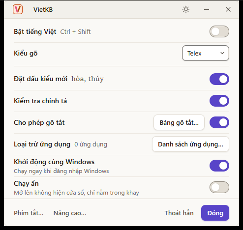
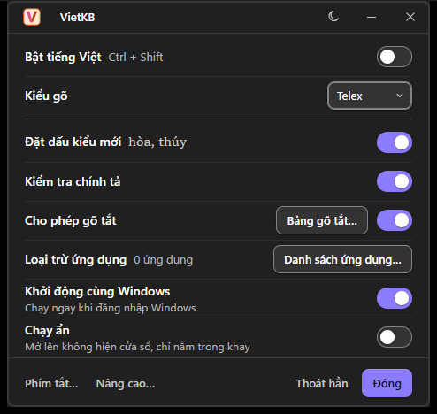

VietKB tập trung vào việc gõ tiếng Việt trên Windows: Telex, VNI và Unicode.
Không thu phí, không quảng cáo, không ghi lại nội dung gõ. Mã nguồn mở.
14 MB trong khay · bộ cài khoảng 3 MB · mở cửa sổ khoảng 0,3 giây · Unicode NFC và NFD
Bộ gõ tiếng Việt cho Windows
Gõ tiếng Việt bằng Telex hoặc VNI. VietKB chạy gọn trong khay hệ thống, dùng bảng mã Unicode NFC hoặc NFD.
Bản phát hành mới nhất: v0.1.1 · 3,1 MB Bản chưa ký số
tieengs, ra tiếng. Ảnh cửa sổ chính nằm ở mục Giao diện bên dưới.
VietKB tập trung vào việc gõ tiếng Việt trên Windows: Telex, VNI và Unicode.
Không thu phí, không quảng cáo, không ghi lại nội dung gõ. Mã nguồn mở.
14 MB trong khay · bộ cài khoảng 3 MB · mở cửa sổ khoảng 0,3 giây · Unicode NFC và NFD
Từ kiểu gõ, gõ tắt đến quy tắc riêng cho từng ứng dụng.
Chọn Telex hoặc VNI. Kết quả dùng Unicode NFC hoặc NFD; không hỗ trợ bảng mã khác.
Tạo bảng gõ tắt, nhập hoặc xuất để dùng trên máy khác. Có thể bật tắt riêng, chọn theo hoa/thường; vẫn dùng được khi tắt tiếng Việt.
Đặt quy tắc theo ứng dụng và nhớ trạng thái bật/tắt riêng khi chuyển cửa sổ.
Chín hành động có phím tắt, gồm F1, F2 và Ctrl+Shift. Có thể đổi tổ hợp phím trong cài đặt.
14 MB khi chạy trong khay; bộ cài 3,1 MB. Viết bằng Rust và Tauri 2.
Nhấp trái biểu tượng V/E để bật hoặc tắt. Có thể khởi động cùng Windows, chạy ẩn và kiểm tra cập nhật trong ứng dụng.
Chọn kiểu cũ hoặc mới, đặt dấu tự do, kiểm tra chính tả và tự khôi phục từ gõ sai. Có viết hoa đầu câu, phụ âm j/f/w/z và tự đổi ưo thành ươ.
Đánh dấu URL hoặc đoạn mã để VietKB không chuyển đổi nội dung.
Hỗ trợ gõ tiếng Việt trên bàn phím ảo Windows (VK_PACKET).
Hai âm thanh riêng báo lúc bật và tắt tiếng Việt.
Một bảng 480 × 460 và ba cửa sổ phụ: Phím tắt, Bảng gõ tắt, Nâng cao. Chọn giao diện Sáng hoặc Tối.


Ba bước, không cần cài thêm gì.
Nhấn Tải cho Windows để lấy tệp .exe mới nhất từ trang phát hành.
Mở tệp vừa tải, làm theo hướng dẫn cài đặt. Xong thì VietKB nằm trong khay hệ thống, sẵn sàng gõ.
Mở bất kỳ ô nhập nào và gõ. Nhấp trái vào biểu tượng trong khay để tắt hoặc bật lại bộ gõ.
Windows SmartScreen có thể cảnh báo Bản chưa ký số nên SmartScreen có thể cảnh báo. Chọn Thông tin thêm, rồi Vẫn chạy. Mã nguồn có trên GitHub.
Tải bản mới nhất và xem ghi chú phát hành từ GitHub.